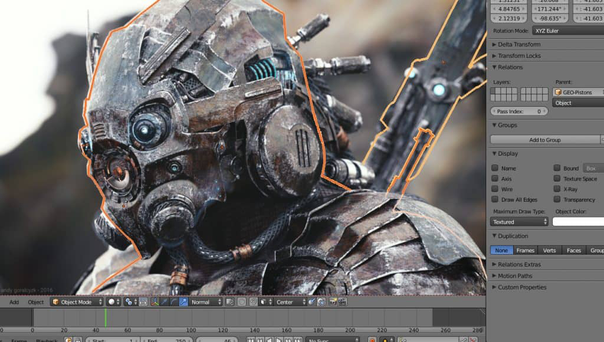
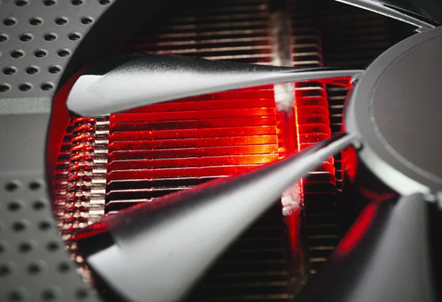
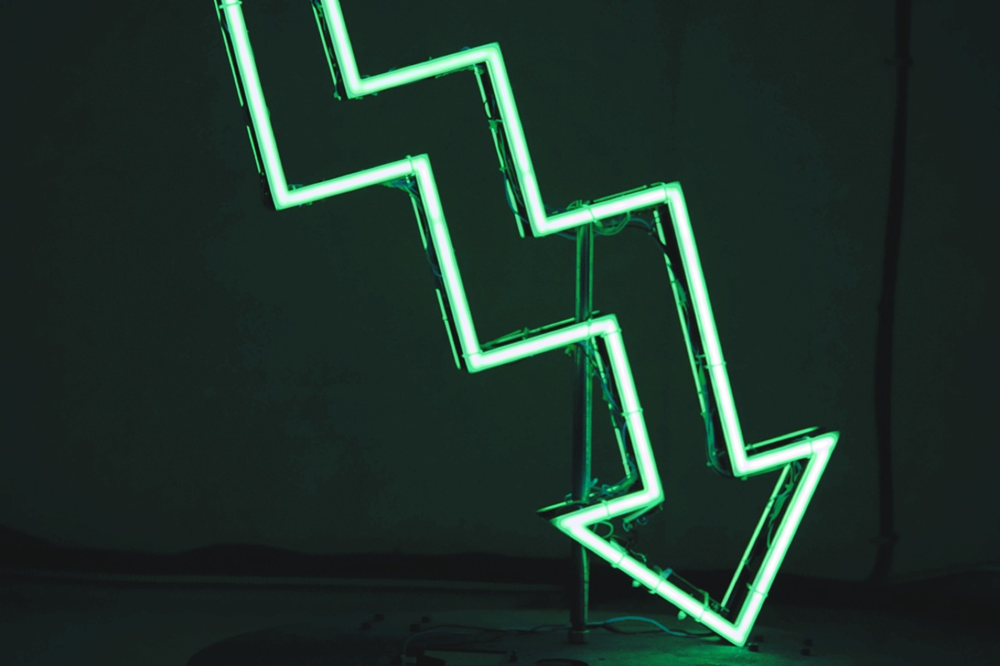

La frequenza di clock indica quanti milioni di cicli di calcolo il chip grafico esegue ogni secondo. A parità di architettura (es. due RTX 4070), una frequenza più alta si traduce direttamente in più FPS (fotogrammi al secondo) nei giochi.
Tuttavia, aumentare la velocità ha un costo fisico: consumi energetici più alti e, soprattutto, molto più calore da dissipare.
È la frequenza minima garantita dal produttore. La scheda non scenderà mai sotto questo valore durante l'uso normale, anche se il PC è in un ambiente caldo o sotto stress massimo (es. rendering 3D prolungato). Rappresenta la "zona di sicurezza" del chip.

La modalità "Turbo" dinamica. La GPU monitora costantemente temperatura e consumo energetico: se ha margine (es. è sotto i 70°C), aumenta automaticamente la frequenza per massimizzare le prestazioni. È qui che la scheda lavora il 99% del tempo mentre giochi.
La pratica di spingere manualmente le frequenze oltre i limiti di fabbrica usando software come MSI Afterburner. Si può ottenere un guadagno del 5-10% di prestazioni "gratis", ma richiede un ottimo raffreddamento e si rischia l'instabilità del sistema (crash o schermate blu).

Il meccanismo di autodifesa. Se la GPU tocca una temperatura critica (solitamente 90°C+), taglia drasticamente le frequenze per evitare danni fisici. Questo causa un crollo improvviso degli FPS (lag). È il segnale che hai bisogno di un Case con migliore airflow.
Spesso le GPU escono di fabbrica con un voltaggio superiore al necessario per garantire stabilità su tutti i chip. L'Undervolting è una tecnica avanzata che consiste nel ridurre manualmente il voltaggio mantenendo la stessa frequenza.
Il risultato? La scheda consuma meno, scalda meno e, paradossalmente, spesso va più veloce perché riesce a mantenere il Boost Clock più a lungo senza andare in Throttling.
